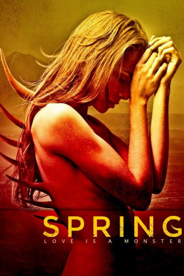

IMDB-Wertung: 6.7 / 10
IMDB-Wertung: 6.7 / 10  Metascore:
Metascore: 
A young man in a personal tailspin flees the US to Italy, where he sparks up a romance with a woman harboring a dark, primordial secret.
Alternativ: Spring
 IMDB-Wertung: 6.7 / 10 Metascore:
A young man in a personal tailspin flees the US to Italy, where he sparks up a romance with a woman harboring a dark, primordial secret.
Jahr: 2014
Dauer: 109 Minuten
FSK: 16
Land: USA Studio: Drafthouse FilmsTonspuren: DTS - ,
Untertitel:
Auflösung: 1080p (1920x800) Größe: 7086 MB
Regisseur: Justin Benson, Aaron Moorhead
Drehbuch: Justin Benson
Soundtrack: Jimmy Lavalle
Darsteller:
 Lou Taylor Pucci als Evan
Lou Taylor Pucci als Evan Nadia Hilker als Louise
Nadia Hilker als Louise Nick Nevern als Thomas
Nick Nevern als ThomasDatei: X:\2014(N-Z)\Spring Love is a Monster (2014, FSK16, 1920x800).mkv seit 04.11.2015
Festplatte: HD 2013(I-Z)-2014(A-Z)
 Es gibt insgesamt 163 Filme in der Gruppe '2014(N-Z)'
Es gibt insgesamt 163 Filme in der Gruppe '2014(N-Z)'